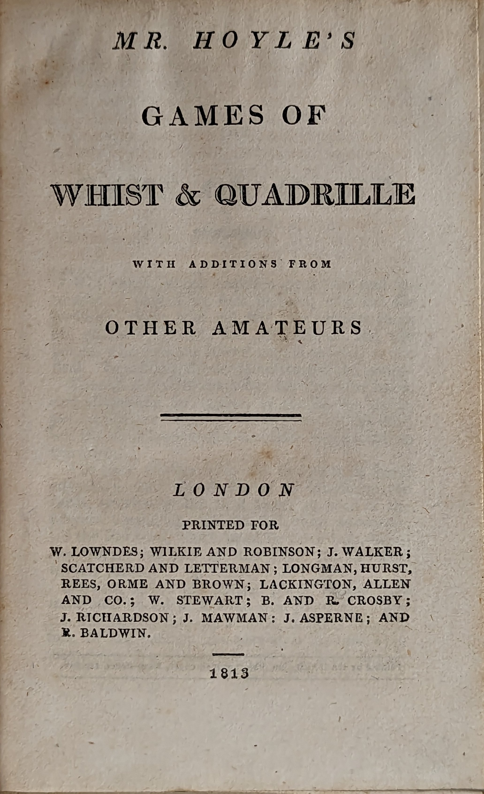

A Descriptive Bibliography of Edmond Hoyle
Copyright © 2014-26 by David Levy
(page updated 2025-04-29)User Guide
Jones.9-1
Mr. Hoyle's Games of Whist & Quadrille, printed for W. Lowndes et al, extracted from the ninth London edition, 1813.
 |
Title: | MR. HOYLE'S | GAMES OF | WHIST & QUADRILLE | WITH ADDITIONS FROM | OTHER AMATEURS | [short oxford rule] | LONDON | PRINTED FOR | W. LOWNDES; WILKIE AND ROBINSON; J. WALKER; | SCATCHERD AND LETTERMAN; LONGMAN, HURST, | REES, ORME AND BROWN; LACKINGTON, ALLEN | AND CO.; W. STEWART; B. AND R. CROSBY; | J. RICHARDSON; J. MAWMAN; J; ASPERNE; AND | R. BALDWIN | [short rule] | 1813 |
| Collation: | 18o: A1 B–I6 K6(−K6 missing, blank?) [$1,3 signed]; 54 leaves, pp. [2 ] [1] 2–106 |
| Contents: | Signature (Page) Reference | Contents | Signature (Page) Reference | Running Titles |
| A1r | title | |||
| A1v | ‘[rule] | Printed by HANSARD, jun, Peterborough court, Fleet-street, London. | [rule]’ | |||
| B1r–K5v (1–106) | see Jones.9 | B1v–K5v (2–106) | see Jones.9 | |
| K5v (106) | ‘[...] | [colophon]’ |
| Publisher: | William Lowndes, Wilkie and Robinson, J. Walker, Scatcherd and Letterman, Longman, Hurst, Rees, Orme, and Brown, Lackington, Allen and Co., William Stewart, Benjamin and Richard Crosby, John Richardson, Joseph Mawman, James Asperne, Robert Baldwin II, Gale, Curtis and Fenner |
| Printer: | Thomas Curson Hansard (colophon, Longman Archives) |
| Notices: | 1814-01-04 The Morning Chronicle: "In a pocket volume, price 7s. 6d. bound, a corrected edition of Charles Jones's Hoyle's Games Improved...from whom may be had, several of the above-mentioned games, printed in separate pamphlets." |
| Price: | 2s. (advertisement) |
| References: | Jessel 817, Rather 101 |
| Colophon: | ‘[rule] | Printed by HANSARD, jun., Peterborough Court, Fleet-street, London. | [rule].’ |
| Copies Seen: | BFl [I.795/HOYL (b1163084)]; O [Dunston F 693]; O [Jessel f.626]; Levy [1586] |
| Other Copies: | OC [795.1 H86.1, 1813] |
| Notes: | A separate issue of pages 1-106 of Jones.9 with the same setting of type. Jessel 817 also mentions an edition of 1814. No copies survive, even at the Bodleian Library which houses the Jessel collection. There is no hint of such a book in the Longman Archives. I have chosen not to include it in this bibliography. |